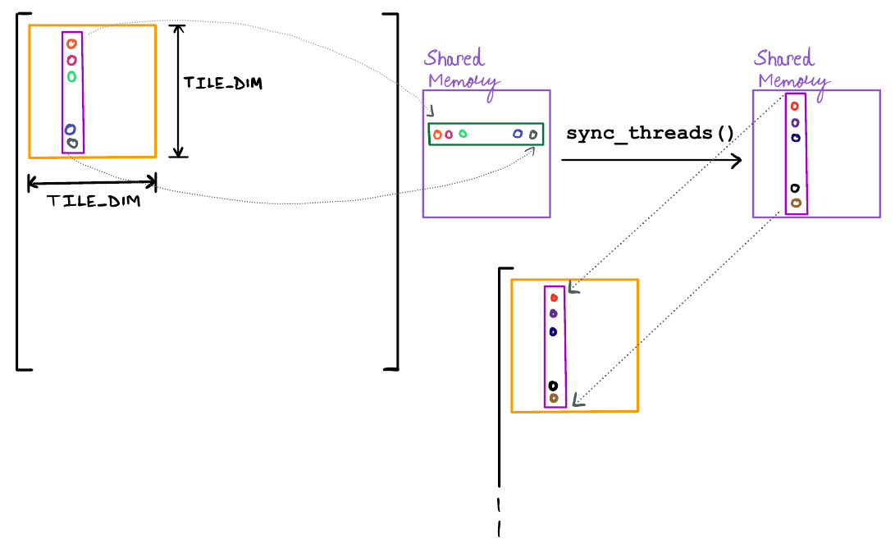

Shared memory
In this example we will explore shared memory. We will use array reversal and matrix transpose as examples.
Shared memory is the memory in a SM(symmetric multiprocessor) which is accessable to all threads running on the SM. It is much faster than global memory much closer. The amount of shared memory available depends on the compute capability of the GPU. Increasing the amount of shared memory reduces occupancy.
syncthreads() is a function which adds a barrier for all threads in a thread block. While all threads in a block execute concurrently, physically only a subset of these are running with true parallelism. A barrier ensures that all threads which belong to it stall until all have reached the barrier. This is commonly used as a synchronization mechanism to eliminate race conditions.
Array Reversal
Our job is to reverse an array, i.e $[1, 2, 3] \rightarrow [3, 2, 1]$.
using CUDA, BenchmarkTools function reverse(input, output = similar(input)) len = length(input) for i = 1:cld(len,2) output[i], output[len - i + 1] = input[len - i + 1], input[i] end output end
reverse (generic function with 2 methods)
reverse([1, 2, 3, 4, 5])
5-element Array{Int64,1}:
5
4
3
2
1
function gpu_reverse(input, output) tid = threadIdx().x len = length(input) if tid <= cld(len, 2) output[tid], output[len - tid + 1] = input[len - tid + 1], input[tid] end return end
gpu_reverse (generic function with 1 method)
A = CuArray(collect(1:5)) B = similar(A) @cuda blocks=1 threads=length(A) gpu_reverse(A, B) B
5-element CUDA.CuArray{Int64,1}:
5
4
3
2
1
There are two ways to declare shared memory: Statically and Dynamically. We declaring it statically when we the need is the same amount for all kernel launches and its known while writing the kernel. In the other case we declare it dynamically and specify while launching with the @cuda macro using the shmem argument.
?@cuStaticSharedMem
ERROR: syntax: invalid identifier name "?"
function gpu_stshmemreverse(input, output) # Maximum size of array is 64 shmem = @cuStaticSharedMem(eltype(output), 64) tid = threadIdx().x len = length(input) shmem[tid] = input[len - tid + 1] output[tid] = shmem[tid] return end
gpu_stshmemreverse (generic function with 1 method)
A = CuArray(collect(1:32)) B = similar(A) @cuda blocks=1 threads=length(A) gpu_stshmemreverse(A, B) print(B)
[32, 31, 30, 29, 28, 27, 26, 25, 24, 23, 22, 21, 20, 19, 18, 17, 16, 15, 14 , 13, 12, 11, 10, 9, 8, 7, 6, 5, 4, 3, 2, 1]
When the amount of shared memory required isn't known while writing the kernel overallocating is not a good idea because that may potentially reduce our occupancy. As an SM's resource usage increases it's occupancy goes down. Hence, it's best to use dynamically allocated memory when memory usage can only be known at launch time.
?@cuDynamicSharedMem
ERROR: syntax: invalid identifier name "?"
function gpu_dyshmemreverse(input, output) shmem = @cuDynamicSharedMem(eltype(output), (length(output),)) tid = threadIdx().x len = length(input) shmem[tid] = input[len - tid + 1] output[tid] = shmem[tid] return end
gpu_dyshmemreverse (generic function with 1 method)
C = CuArray(collect(1:32)) D = similar(C) @cuda blocks=1 threads=length(C) shmem=length(C) gpu_dyshmemreverse(C, D) print(D)
[32, 31, 30, 29, 28, 27, 26, 25, 24, 23, 22, 21, 20, 19, 18, 17, 16, 15, 14 , 13, 12, 11, 10, 9, 8, 7, 6, 5, 4, 3, 2, 1]
Matrix Transpose
Matrix transpose is an operation which flips a matrix along its main diagonal.

This section is inspired by Mark Harris' blog post on the same topic. Link
A = reshape(1:9, (3, 3))
3×3 reshape(::UnitRange{Int64}, 3, 3) with eltype Int64:
1 4 7
2 5 8
3 6 9
A'
3×3 LinearAlgebra.Adjoint{Int64,Base.ReshapedArray{Int64,2,UnitRange{Int64}
,Tuple{}}}:
1 2 3
4 5 6
7 8 9
A'' # (A')'
3×3 reshape(::UnitRange{Int64}, 3, 3) with eltype Int64:
1 4 7
2 5 8
3 6 9
Ignore the types that Julia returns. LinearAlgebra.Adjoint is a wrapper that uses lazy evaluation to compute the result as required.
# CPU implementation function cpu_transpose(input, output = similar(input, (size(input, 2), size(input, 1)))) # the dimensions of the resultant matrix are reversed for index = CartesianIndices(input) output[index[2], index[1]] = input[index] end output end
cpu_transpose (generic function with 2 methods)
A = reshape(1:20, (4, 5))
4×5 reshape(::UnitRange{Int64}, 4, 5) with eltype Int64:
1 5 9 13 17
2 6 10 14 18
3 7 11 15 19
4 8 12 16 20
cpu_transpose(A)
5×4 Array{Int64,2}:
1 2 3 4
5 6 7 8
9 10 11 12
13 14 15 16
17 18 19 20
Before we begin working on the GPU consider the following code.
A = CuArray(reshape(1.:9, (3, 3))) println("A => ", pointer(A)) CUDA.@allowscalar begin for i in eachindex(A) println(i, " ", A[i], " ", pointer(A, i)) end end
A => CUDA.CuPtr{Float64}(0x00007f5a8c831800)
1 1.0 CUDA.CuPtr{Float64}(0x00007f5a8c831800)
2 2.0 CUDA.CuPtr{Float64}(0x00007f5a8c831808)
3 3.0 CUDA.CuPtr{Float64}(0x00007f5a8c831810)
4 4.0 CUDA.CuPtr{Float64}(0x00007f5a8c831818)
5 5.0 CUDA.CuPtr{Float64}(0x00007f5a8c831820)
6 6.0 CUDA.CuPtr{Float64}(0x00007f5a8c831828)
7 7.0 CUDA.CuPtr{Float64}(0x00007f5a8c831830)
8 8.0 CUDA.CuPtr{Float64}(0x00007f5a8c831838)
9 9.0 CUDA.CuPtr{Float64}(0x00007f5a8c831840)
Notice how consecutive elements are in the same column rather than the same row. This is because Julia stores its multidimensional arrays in a column major order like Fortran. In contrast to C/C++ which are row-major languages. The reason for making Julia's arrays column major is because a lot of linear algebra libraries are column major to begin with (https://discourse.julialang.org/t/why-column-major/24374/3).
# To index our 2-D array we will split the input into tiles of 32x32 elements. # Each thread block will launch with 32x8 = 256 threads # Each thread will work on 4 elements. const TILE_DIM = 32 function gpu_transpose_kernel(input, output) tile_index = ((blockIdx().y, blockIdx().x) .- 1) .* TILE_DIM # each thread manages 4 rows (8x4 = 32) for i in 1:4 thread_index = (threadIdx().y + (i - 1)*8, threadIdx().x) index = CartesianIndex(tile_index .+ thread_index) (index[1] > size(input, 1) || index[2] > size(input, 2)) && continue @inbounds output[index] = input[index[2], index[1]] end return end
gpu_transpose_kernel (generic function with 1 method)
function gpu_transpose(input, output = similar(input, (size(input, 2), size(input, 1)))) threads = (32, 8) blocks = cld.(size(input), (32, 32)) @cuda blocks=blocks threads=threads gpu_transpose_kernel(input, output) output end
gpu_transpose (generic function with 2 methods)
A = CuArray(reshape(1f0:1089, 33, 33))
33×33 CUDA.CuArray{Float32,2}:
1.0 34.0 67.0 100.0 133.0 166.0 … 958.0 991.0 1024.0 1057.0
2.0 35.0 68.0 101.0 134.0 167.0 959.0 992.0 1025.0 1058.0
3.0 36.0 69.0 102.0 135.0 168.0 960.0 993.0 1026.0 1059.0
4.0 37.0 70.0 103.0 136.0 169.0 961.0 994.0 1027.0 1060.0
5.0 38.0 71.0 104.0 137.0 170.0 962.0 995.0 1028.0 1061.0
6.0 39.0 72.0 105.0 138.0 171.0 … 963.0 996.0 1029.0 1062.0
7.0 40.0 73.0 106.0 139.0 172.0 964.0 997.0 1030.0 1063.0
8.0 41.0 74.0 107.0 140.0 173.0 965.0 998.0 1031.0 1064.0
9.0 42.0 75.0 108.0 141.0 174.0 966.0 999.0 1032.0 1065.0
10.0 43.0 76.0 109.0 142.0 175.0 967.0 1000.0 1033.0 1066.0
⋮ ⋮ ⋱ ⋮
25.0 58.0 91.0 124.0 157.0 190.0 982.0 1015.0 1048.0 1081.0
26.0 59.0 92.0 125.0 158.0 191.0 … 983.0 1016.0 1049.0 1082.0
27.0 60.0 93.0 126.0 159.0 192.0 984.0 1017.0 1050.0 1083.0
28.0 61.0 94.0 127.0 160.0 193.0 985.0 1018.0 1051.0 1084.0
29.0 62.0 95.0 128.0 161.0 194.0 986.0 1019.0 1052.0 1085.0
30.0 63.0 96.0 129.0 162.0 195.0 987.0 1020.0 1053.0 1086.0
31.0 64.0 97.0 130.0 163.0 196.0 … 988.0 1021.0 1054.0 1087.0
32.0 65.0 98.0 131.0 164.0 197.0 989.0 1022.0 1055.0 1088.0
33.0 66.0 99.0 132.0 165.0 198.0 990.0 1023.0 1056.0 1089.0
gpu_transpose(A)
33×33 CUDA.CuArray{Float32,2}:
1.0 2.0 3.0 4.0 5.0 … 30.0 31.0 32.0 33.0
34.0 35.0 36.0 37.0 38.0 63.0 64.0 65.0 66.0
67.0 68.0 69.0 70.0 71.0 96.0 97.0 98.0 99.0
100.0 101.0 102.0 103.0 104.0 129.0 130.0 131.0 132.0
133.0 134.0 135.0 136.0 137.0 162.0 163.0 164.0 165.0
166.0 167.0 168.0 169.0 170.0 … 195.0 196.0 197.0 198.0
199.0 200.0 201.0 202.0 203.0 228.0 229.0 230.0 231.0
232.0 233.0 234.0 235.0 236.0 261.0 262.0 263.0 264.0
265.0 266.0 267.0 268.0 269.0 294.0 295.0 296.0 297.0
298.0 299.0 300.0 301.0 302.0 327.0 328.0 329.0 330.0
⋮ ⋱ ⋮
793.0 794.0 795.0 796.0 797.0 822.0 823.0 824.0 825.0
826.0 827.0 828.0 829.0 830.0 … 855.0 856.0 857.0 858.0
859.0 860.0 861.0 862.0 863.0 888.0 889.0 890.0 891.0
892.0 893.0 894.0 895.0 896.0 921.0 922.0 923.0 924.0
925.0 926.0 927.0 928.0 929.0 954.0 955.0 956.0 957.0
958.0 959.0 960.0 961.0 962.0 987.0 988.0 989.0 990.0
991.0 992.0 993.0 994.0 995.0 … 1020.0 1021.0 1022.0 1023.0
1024.0 1025.0 1026.0 1027.0 1028.0 1053.0 1054.0 1055.0 1056.0
1057.0 1058.0 1059.0 1060.0 1061.0 1086.0 1087.0 1088.0 1089.0
A = CUDA.rand(10000, 10000) B = similar(A) @benchmark CUDA.@sync gpu_transpose(A, B)
BenchmarkTools.Trial: memory estimate: 320 bytes allocs estimate: 9 -------------- minimum time: 12.517 ms (0.00% GC) median time: 12.947 ms (0.00% GC) mean time: 12.875 ms (0.00% GC) maximum time: 13.447 ms (0.00% GC) -------------- samples: 389 evals/sample: 1
@benchmark CUDA.@sync B .= A
BenchmarkTools.Trial: memory estimate: 464 bytes allocs estimate: 13 -------------- minimum time: 7.450 ms (0.00% GC) median time: 7.636 ms (0.00% GC) mean time: 7.739 ms (0.00% GC) maximum time: 8.090 ms (0.00% GC) -------------- samples: 646 evals/sample: 1
#=
# Not sure if this should be included, custom kernel does happen to be faster
# than the broadcast copy.
function gpu_copy_kernel(input, output)
x_index = (blockIdx().x - 1)*TILE_DIM + threadIdx().y
y_index = (blockIdx().y - 1)*TILE_DIM + threadIdx().x
for i in 1:4 # each thread needs to manage 4 rows (8x4 = 32)
index = CartesianIndex(y_index , x_index + (i - 1)*8)
(index[1] > size(input, 1) || index[2] > size(input, 2)) && continue
@inbounds output[index] = input[index]
end
return
end
function gpu_copy(input, output = similar(input, size(input)))
threads = (32, 8)
blocks = cld.(size(input), (32, 32))
@cuda blocks=blocks threads=threads gpu_copy_kernel(input, output)
output
end
A = CUDA.rand(12000, 12000)
B = similar(A)
@benchmark CUDA.@sync gpu_copy(A, B)
=#
Coalescing Memory Access
Compared to a simple elementwise copy we are roughly at 60% performance. Both kernels have a single load and store for each value. If all loads and stores were independent of each other then this should not have happened.
Consider a thread accessing(load or store) a single value in global memory. Instead of transferring just the one value the GPU will instead transfer a larger chunk of memory as a single transaction. For example on NVIDIA's K20 GPU this size was 128 bytes. When threads in a warp access consecutive memory addresses the GPU can service multiple threads in the same transaction. This is known as memory coalesing. Access time is effectively reduced by minimizing the number of transactions. However when threads access non-sequentially or sparse data then transactions are serialised. (// TODO: Could be written better)
We want consecutive threads of a warp to access consecutive elements in memory. When the thread block is one-dimensional it is straightforward to determine warpId = threadId().x % warpsize(). According to NVIDIA's documentation on thread hierarchy.
The index of a thread and its thread ID relate to each other in a straightforward way: For a one-dimensional block, they are the same; for a two-dimensional block of size (Dx, Dy),the thread ID of a thread of index (x, y) is (x + y Dx); for a three-dimensional block of size (Dx, Dy, Dz), the thread ID of a thread of index (x, y, z) is (x + y Dx + z Dx Dy).
In our kernel there are four loads and stores per thread.
tile_index = ((blockIdx().y, blockIdx().x) .- 1) .* TILE_DIMthread_index = (threadIdx().y + (i - 1)*8, threadIdx().x)index = CartesianIndex(tile_index .+ thread_index)Load: input[index[2], index[1]]Store: output[index[1], index[2]]
The loads are coalesced because the column is indexed by index[2] which has threadIdx().x and the stores are non-coalesced because they are indexed by index[1] which has threadIdx().y.
To ensure coalescing during both loads and stores we will use shared memory. We will load from global memory a column and store it in shared memory as a row, effectively transposing it. Once all threads have written to shared memory we can write back to global memory column wise.

function gpu_transpose_kernel2(input, output) # Declare shared memory shared = @cuStaticSharedMem(eltype(input), (TILE_DIM, TILE_DIM)) # Modify thread index so threadIdx().x dominates the column block_index = ((blockIdx().y, blockIdx().x) .- 1) .* TILE_DIM for i in 1:4 thread_index = (threadIdx().x, threadIdx().y + (i - 1)*8) index = CartesianIndex(block_index .+ thread_index) (index[1] > size(input, 1) || index[2] > size(input, 2)) && continue @inbounds shared[thread_index[2], thread_index[1]] = input[index] end # Barrier to ensure all threads have completed writing to shared memory sync_threads() # swap tile index block_index = ((blockIdx().x, blockIdx().y) .- 1) .* TILE_DIM for i in 1:4 thread_index = (threadIdx().x, threadIdx().y + (i - 1)*8) index = CartesianIndex(block_index .+ thread_index) (index[1] > size(output, 1) || index[2] > size(output, 2)) && continue @inbounds output[index] = shared[thread_index...] end return end function gpu_transpose_shmem(input, output = similar(input, (size(input, 2), size(input, 1)))) threads = (32, 8) blocks = cld.(size(input), (32, 32)) @cuda blocks=blocks threads=threads gpu_transpose_kernel2(input, output) output end
gpu_transpose_shmem (generic function with 2 methods)
A = CuArray(reshape(1f0:1089, (33, 33))) B = similar(A) gpu_transpose_shmem(A, B)
33×33 CUDA.CuArray{Float32,2}:
1.0 2.0 3.0 4.0 5.0 … 30.0 31.0 32.0 33.0
34.0 35.0 36.0 37.0 38.0 63.0 64.0 65.0 66.0
67.0 68.0 69.0 70.0 71.0 96.0 97.0 98.0 99.0
100.0 101.0 102.0 103.0 104.0 129.0 130.0 131.0 132.0
133.0 134.0 135.0 136.0 137.0 162.0 163.0 164.0 165.0
166.0 167.0 168.0 169.0 170.0 … 195.0 196.0 197.0 198.0
199.0 200.0 201.0 202.0 203.0 228.0 229.0 230.0 231.0
232.0 233.0 234.0 235.0 236.0 261.0 262.0 263.0 264.0
265.0 266.0 267.0 268.0 269.0 294.0 295.0 296.0 297.0
298.0 299.0 300.0 301.0 302.0 327.0 328.0 329.0 330.0
⋮ ⋱ ⋮
793.0 794.0 795.0 796.0 797.0 822.0 823.0 824.0 825.0
826.0 827.0 828.0 829.0 830.0 … 855.0 856.0 857.0 858.0
859.0 860.0 861.0 862.0 863.0 888.0 889.0 890.0 891.0
892.0 893.0 894.0 895.0 896.0 921.0 922.0 923.0 924.0
925.0 926.0 927.0 928.0 929.0 954.0 955.0 956.0 957.0
958.0 959.0 960.0 961.0 962.0 987.0 988.0 989.0 990.0
991.0 992.0 993.0 994.0 995.0 … 1020.0 1021.0 1022.0 1023.0
1024.0 1025.0 1026.0 1027.0 1028.0 1053.0 1054.0 1055.0 1056.0
1057.0 1058.0 1059.0 1060.0 1061.0 1086.0 1087.0 1088.0 1089.0
A = CUDA.rand(10000, 10000) B = similar(A) @benchmark CUDA.@sync gpu_transpose_shmem(A, B)
BenchmarkTools.Trial: memory estimate: 320 bytes allocs estimate: 9 -------------- minimum time: 7.415 ms (0.00% GC) median time: 7.625 ms (0.00% GC) mean time: 7.742 ms (0.00% GC) maximum time: 8.339 ms (0.00% GC) -------------- samples: 646 evals/sample: 1
@benchmark CUDA.@sync B .= A # TODO: Doesn't look like an inspiring case. We should investigate why the broadcast is slower. # ofc make it faster so that there is an inspiring claim of how there is more room # for performance. Making "bank conflicts" the next natural topic.
BenchmarkTools.Trial: memory estimate: 464 bytes allocs estimate: 13 -------------- minimum time: 7.451 ms (0.00% GC) median time: 7.674 ms (0.00% GC) mean time: 7.784 ms (0.00% GC) maximum time: 18.362 ms (0.00% GC) -------------- samples: 642 evals/sample: 1
Shared Memory Bank conflicts
Inside a , shared memory is divided into banks. Modern NVIDIA GPUs have 32 banks which have a 4-byte boundary. This means addresses 1-4 of shared memory are serviced by bank 1, addresses 5-8 are serviced by bank two and so on. When multiple threads access memory from the same bank then their requests are serialised.
Nsight compute gives statistics about shared memory usage. Running the profiler on gpu_transpose_shmem for an input of 33x33 of Float32 we get:

It reports zero conflicts during shared loads which makes sense during shared loads because we load column by column to write to output matrix.
The 1023 store conflicts can be explained as follows. When an entire column is read it is stored to a row. Consecutive elements in a row differ in address by column_length*sizeof(datatype). In 33 tile columns we write directly to a complete row where 32 elements are written hence there are 31 write conflicts. 33*31 = 1023
// DIAGRAM
The fix is quite simple, pad the column length in shared memory by 1. Now consecutive elements in a row will differ by 33 % 32 = 1 hence no more bank conflicts.
i.e. shared = @cuStaticSharedMem(eltype(input), (TILE_DIM + 1, TILE_DIM))
function gpu_transpose_kernel3(input, output) # Declare shared memory shared = @cuStaticSharedMem(eltype(input), (TILE_DIM + 1, TILE_DIM)) # Modify thread index so threadIdx().x dominates the column block_index = ((blockIdx().y, blockIdx().x) .- 1) .* TILE_DIM for i in 1:4 thread_index = (threadIdx().x, threadIdx().y + (i - 1)*8) index = CartesianIndex(block_index .+ thread_index) (index[1] > size(input, 1) || index[2] > size(input, 2)) && continue @inbounds shared[thread_index[2], thread_index[1]] = input[index] end # Barrier to ensure all threads have completed writing to shared memory sync_threads() # swap tile index block_index = ((blockIdx().x, blockIdx().y) .- 1) .* TILE_DIM for i in 1:4 thread_index = (threadIdx().x, threadIdx().y + (i - 1)*8) index = CartesianIndex(block_index .+ thread_index) (index[1] > size(output, 1) || index[2] > size(output, 2)) && continue @inbounds output[index] = shared[thread_index...] end return end function gpu_transpose_noconf(input, output = similar(input, (size(input, 2), size(input, 1)))) threads = (32, 8) blocks = cld.(size(input), (32, 32)) @cuda blocks=blocks threads=threads gpu_transpose_kernel3(input, output) output end
gpu_transpose_noconf (generic function with 2 methods)
A = CUDA.rand(10000, 10000) B = similar(A) @benchmark CUDA.@sync gpu_transpose_noconf(A, B)
BenchmarkTools.Trial: memory estimate: 320 bytes allocs estimate: 9 -------------- minimum time: 6.020 ms (0.00% GC) median time: 6.240 ms (0.00% GC) mean time: 6.324 ms (0.00% GC) maximum time: 6.695 ms (0.00% GC) -------------- samples: 790 evals/sample: 1
A = CUDA.rand(10000, 10000) B = similar(A) @benchmark CUDA.@sync gpu_transpose_shmem(A, B)
BenchmarkTools.Trial: memory estimate: 320 bytes allocs estimate: 9 -------------- minimum time: 7.453 ms (0.00% GC) median time: 7.674 ms (0.00% GC) mean time: 7.787 ms (0.00% GC) maximum time: 8.423 ms (0.00% GC) -------------- samples: 642 evals/sample: 1